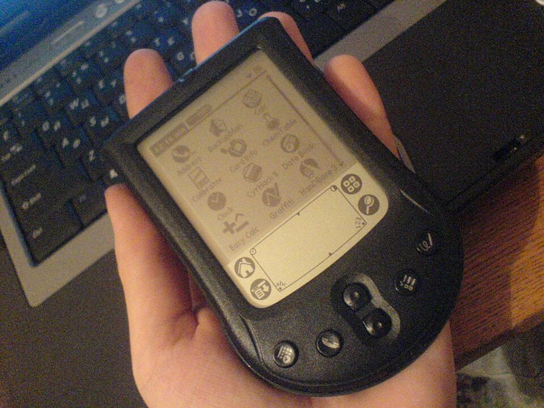

bête noire
… The journalist, my bête noire, entered …
最讨厌的东西，眼中钉
法语，字面是「黑色的野兽」，指最讨厌、最怕碰上的人或事。英文里直接借用。
第 3 章的后半。作者先骂记者，再讲他为什么床头堆着老书、拿不准时宁可不碰新东西；中间插进经济学家席勒和默顿的一段公案，和「挑交易员要挑白头发的」这个说法。最后是全章的数学：一个本事很好的退休牙医在阁楼里盯盘，一年看一次、一个月看一次、一秒看一次，他看到的是同一个自己吗？读的时候抓一条线：看得越勤，看到的到底是什么。

03a 讲完蒙特卡洛和「坏交易迟早会找上你」，§9 讲完祖父的公寓，又借来遍历性：样本路径足够长，运气的成分会被冲淡。这一页接着走：如果「长」能滤掉噪声，那么老想法、历史、活得久的交易员，就都是被时间滤过的东西。§12 末句作者说要用数学把这些论点重说一遍，§13 就是那段数学。§10 开头回指第 2 章那位上电视的专栏作家 George Will，§11 的席勒也是第 2 章那位。
§10 作者说，拿不准时应该系统地拒绝新的想法、信息和方法，而且「总是」如此。这是他的立场，靠一段推理和他自己的判断撑着，书里没有给数。读的时候留意他算了哪一边的账，没算哪一边。
看得越多、越勤，知道得就越多吗？
读的时候带着这几个问题。不用先找答案，读完回来对照「检查一下理解」。
§10 从骂记者起头，很快变成一条推理：好记者应该像历史学家，淡化自己手里的消息；老想法经过了时间的筛选。接着是「新新事物」、有毒的信息、6:42 的通勤火车，故事和议论搅在一起。§11 突然转进经济学界的一段公案：席勒说股价波动太大，默顿出来反驳，后来却参与创办了对冲基金。这一节后两段又绕回「新闻快报」和几位他欣赏的记者，读着像离题。§12 只有一段，从挑老交易员跳到择偶，再跳到文艺复兴时期的寿险，末句宣布要用数学重说一遍。§13 先引一句古希腊的箴言和一首诗，再造出一个虚构的牙医，摆出一张按时间尺度排的表和三条结论，最后又回到报纸、倦怠和作者自己的沉默。数学集中在牙医那一段，其余是议论。
这一页是原书和译本第 3 章的后半，§10 到 §13，一共 4 节。粗体是本站给的节名，后面是档和译本字数；下面是译本的小标题和这一节在译本电子书里开头的几个字（搜它就能跳过去），再下面是英文原文的开头。「先读」是这一章的骨架，「有空」好看、跳过不丢线，「可跳过」读不读都行。读完打个勾。
先把这一页用到、作者默认你懂的几个概念讲一遍。讲的是概念本身，作者拿它推出什么，读原书时自己看。别页讲过的概念，点链接过去看。
波动说的是一个数每次围着平均值上下摆多远，统计里用标准差衡量。数据大致呈钟形（正态分布）时，约三分之二的情况落在平均值上下一个标准差之内，约 95% 落在两个标准差之内。
通勤时间是个好例子：平均 40 分钟、标准差 5 分钟，大约三天里有两天在 35 到 45 分钟之间，二十天里约有一天跑出 30 到 50 分钟。投资里说「年化收益 15%、波动 10%」，意思是一年的收益多半落在 5% 到 25% 之间，少数年份更好或更差，偶尔还会亏。波动和收益用同一个单位，都是百分比。
在这一页：§13 的牙医就是「收益 15%、波动 10%」，作者用 68% 和 95% 两个数说明这组设定。模拟器和「噪声和信号」都要用它。
信号是你真正想知道的东西（这笔投资平均能赚多少），噪声是叠在上面、不含信息的随机起伏。两者随时间长的方式不一样：平均收益和时间成正比，一年 15%，一个月就是 1.25%；波动只和时间的平方根成正比，一年 10%，一个月约 2.9%（10 除以 12 的平方根）。
所以时间切得越短，噪声相对信号越大：看一年，信号比噪声大；看一个月，噪声已经是信号的两倍多；看一天，约十倍。程序员熟悉的例子是每天称体重：真实的趋势是每月掉半公斤，每天的读数却跟着喝水吃饭上下跳一公斤，天天看只会看到噪声。
在这一页：§10 作者把「噪声和信息」比作「新闻和历史」，§13 用牙医把它算出来。模拟器演的就是这一条。
对冲基金是只收富人和机构的钱、监管比普通基金松得多的投资合伙。它能做普通基金不大做的事：借钱放大仓位（杠杆）、做空、买卖各种衍生品。管理人一般按资产收管理费，再从赚到的钱里抽一大笔分成：赚得多时拿得多，亏光时损失主要落在投资人身上。名字里的「对冲」原指用一笔交易抵消另一笔的风险，今天的对冲基金未必在对冲什么。
长期资本管理公司（Long-Term Capital Management，LTCM）是 1994 年成立的对冲基金，合伙人里有默顿和斯科尔斯（两人 1997 年获诺贝尔经济学奖）。它主要押相近的债券之间的价差会收拢，靠杠杆把小价差放大。1998 年俄罗斯违约后价差反而拉大，基金巨亏；9 月，纽约联储出面召集 14 家金融机构注资约 36 亿美元接手，没有动用公款，基金 2000 年初清盘。
在这一页：§11 默顿那家对冲基金就是 LTCM，正文没点它的名字，书后第 3 章的注释列了 Lowenstein 2000 年写 LTCM 的书。做空见做空，衍生品见衍生品。
有效市场假说说：价格已经反映了所有公开的信息，新消息一出来就被吸收，所以没人能靠公开信息稳定地赚到超出所担风险的钱。它不是说价格永远「对」，而是说你很难事先知道它错在哪个方向。
股价按理是公司未来能分给股东的钱（股利）折算到今天的价值。席勒 1981 年拿美国一百多年的数据比：如果股价只反映后来真实发生的股利，它的起伏应该平缓得多，实际却大得多。这叫「波动过度」。怎样解释它，经济学界分成两路：一路说是人的情绪和偏误，一路说是投资人要求的回报本身在随时间变。
在这一页：§11 席勒和默顿的争论就围着这个打转；作者把它接到「信息对社会的价值」上。
先猜：一个本事很好的投资人，一年平均比国库券多赚 15%、波动 10%，一年下来多半是赚的。如果他每天看一次账户，大约有多少天看到的是「赚了」？每秒看一次呢？再点下面的模拟器验证。
选多久看一次账户，看「这一次看到的是赚还是亏」怎样变。最上面是看一次可能看到的结果（钟形，红色是亏、绿色是赚），中间是接下来 40 次看盘，最下面是七种频率各自「看到赚」的概率。先停在「每年」，再一档一档往下选。
需要浏览器打开脚本才能运行。
各个控件：「看盘频率」是多久看一次账户，一年按 252 个交易日、每天 8 小时算（书里写了每天 8 小时）；「年化超额收益」是一年平均比国库券多赚多少；「年化波动」是一年收益的标准差；「难过的分量」是看到一次亏的难受，抵得上几次看到赚的高兴。模型假设每次看到的收益服从正态分布，平均值是年化收益除以一年看的次数，标准差是年化波动除以次数的平方根，各次独立。下面四个数依次是：看一次看到「赚了」的概率；噪声是信号的几倍（这一次波动的标准差除以这一次的平均收益）；一段时间里平均高兴几次、难过几次（标签上写着是 20 年、一年还是一天）；一年的心情账（每看到一次赚记 +1，每看到一次亏记减去「难过的分量」，一年加起来，不管亏了多少）。概率和次数是精确算的；40 个方块用带种子的伪随机数抽，点「换 40 次」再抽一组。
表 3.1 是一张图片，在译本电子书里搜不到。§13 作者说噪声和表现之比是「左栏除以右栏」，可表里只有「时间尺度」和「概率」两栏，没法相除；他实际算的是统计栏的第二个数，这一次波动的标准差除以平均收益，书里的 0.7、2.32、30、1,796 都能这样复现。§13 说每年看、二十年里「十九次惊喜对一次不愉快」，算出来是 18.7 次对 1.3 次，是取整的说法。这个模拟器只演一件事：同一个投资，看的频率不同，看到的东西就不同。正态、各次独立是最简单的假设，真实市场里极端的日子比这多。牙医的设定很乐观，作者自己也这么说：把收益改成 5%、波动改成 20%，每年看也只有约六成的年份是赚的。
按在书里出现的顺序排，标题前是节号。只讲到读懂这一页需要的程度。
The New New Thing 是 Michael Lewis 1999 年一本书的书名，写网景的创始人 Jim Clark，互联网泡沫那几年成了「下一个改变世界的东西」的代称。6:42 的火车是从纽约郊区开进曼哈顿的早班通勤车；《华尔街日报》是美国的财经日报，每个工作日出版，§13 作者拿它和每周一期的《纽约客》比。作者还承认，他读的新闻只有《Tatler》《Paris Match》《Vanity Fair》里的上流社会八卦，外加《经济学人》。
作者说的是他 1981 年发表在《美国经济评论》上的论文，用的是 1871 年起的美国股价和股利数据。第 2 章那段电视访谈里，George Will 拿「你以前说错过」来反驳他，就是 §11 第一段末尾说的「前面一章」。
书里没给反驳的出处。一般指的是 Marsh 和默顿 1986 年的论文：公司会刻意把股利维持平稳，所以拿股利当基本面的检验不成立，席勒同年发文回应。他参与创办的对冲基金是 LTCM，见「先用中文过一遍」的对冲基金块。
Anatole Kaletsky 是伦敦的经济评论员；Jim Grant 在纽约办一份老派的利率和信贷通讯《格兰特利率观察》（Grant’s Interest Rate Observer）；Alan Abelson（1925–2013）在《巴伦周刊》写了几十年的专栏「Up and Down Wall Street」；Gary Stix 是《科学美国人》的编辑。作者说前三位是财经记者里被低估的一类，Stix 是科学记者里的代表。§11 末段的律师在第 11 章。
作者说，文艺复兴时期意大利的寿险商对二十几岁和五十几岁的人收一样的保费，说明他们认为两者的预期寿命相同。书后的书目没有给出处，本站也没有查到，当作者的说法读。同一段里择偶的说法来自进化心理学的一种观点，作者自己加了「总的来说」（on balance）和「其他条件相同」两层限定。
Philostratus 是罗马帝国时期用希腊文写作的智者（sophist），活在公元 2 到 3 世纪，写了《阿波罗尼乌斯传》。「神看未来，凡人看眼前，智者看将要发生的事」出自这本书第 8 卷。C. P. Cavafy（1863–1933）是住在埃及亚历山大港的希腊诗人，拿这句话作题记写了一首诗，作者说写于 1915 年。作者引它，是为「聪明人听意义，傻瓜只听噪声」开个头。
牙医是作者编的例子，作者说「我们先验地知道他是优秀的投资者」：本事是设定好的，这一节讲的是看的频率，不是怎样识别本事。他和第 2 章那位「靠钻牙赚了一千万」的牙医不是同一个设定。国库券是美国政府发行的短期借条，几乎没有风险；「比国库券多赚 15%」就是超额收益。Park Avenue 是纽约曼哈顿的富人区。
读英文原文时值得停一下的词和句：交易员的行话、作者的反话和双关、熟词生义。灰色斜体是原句里连续的几个词，在英文电子书里搜它就能找到；标「每个字都认识」的，是每个词都眼熟、合起来意思却变了的，最容易读错。点「记下」收进词本。
对着译本读这一章时，下面这些地方会把人读歪。方框里是译本的原句，在译本电子书里搜它就能找到；灰色斜体是英文原文那一处。只收意思错了、反了、漏了的，措辞上的出入和台湾用语不收。全书的勘误汇总在译本勘误。
… Clearly and shockingly, always. …
译本：「這個道理很明顯，卻令人震驚」
原文这一句里还有一个词 always：拿不准时系统地拒绝新东西，而且「总是」如此，这是全页口气最硬的一句。读译本会以为作者只是说这个道理令人吃惊，看不出他把话说到了「总是」。
… Losers? The Saturday newspaper lists …
译本：「我們可以不看輸家嗎？」
原文是自问自答：输家在哪？周六的报纸上就列着几十项号称能改变生活的新专利，它们就是被忽略的那一大堆。译本成了反问「能不能不看输家」，下一句的专利就没头没尾，读不出它们正是输家。
… provide some evidence of better genes …
译本：「因為證據顯示前者的基因比較好」
原文是说，年纪大而健康的男人，本身就为「基因较好」提供了一点证据，和白发、老交易员是同一个道理：活下来就是证明。译本读来像是有研究证明年长男性基因更好，把一个推理变成了一条研究结论。
… the observation will reveal close to nothing …
译本：「賺賠觀察值幾乎相抵」
原文说时间切得很细时，一次观察几乎不透露任何信息，看不出牙医有没有本事。译本说成赚和赔「几乎相抵」，像是金额抵消了；§13 讲倦怠时作者恰恰说难受和高兴抵消不了，两处读着会打架。
… why the news (the high scale) is …
译本：「新聞（高時間尺度）充滿著雜訊」
原文的 high scale 指观察的频率高、每次隔得很短，说的是新闻；low scale 指隔得长，说的是历史。中文说「时间尺度高」很容易理解成时间跨度大，正好反了。读这句时把新闻当成「短尺度」、历史当成「长尺度」。
… too closely at randomness burn out …
译本：「太密集注意隨機性的人會被燒傷」
burn out 是长期压力下身心耗尽，就是「职业倦怠」那个词，下一段说的「交易员的倦怠」也是它。译成「燒傷」，读来像是被烫了一下，丢了「一点点被耗干」的意思。
读完这一章再看。下面是作者在这一章里的主张，由本站按主张之间的逻辑重新组织，不按原书的顺序；每条后面是节号，拿不准就回书里那一节再读一遍。
他把「噪声和信息」类比成「新闻和历史」：记者要称职，就得像历史学家那样淡化手里的消息，可这样做会丢饭碗。他说媒体靠吸引注意力收钱，没经过蒸馏的信息所占的比例还在上升；但他也承认有不少深思的记者，问题在主流媒体没有把两者分开的机制。
§10 §11 §13理由是：进步只要求有些新东西比旧的好，平均的新东西并不更好；一个想法活过了很多轮，说明它相对适应。拿汽车、飞机说明新发明值得追，只数了赢家。他判断错过这些「珍宝」的代价，比翻遍垃圾的害处小得多，还说他常常（frequently）怀疑它们真改善了生活。
§10他说自己用蒙特卡洛模拟过多种「状态」下的交易员群体（书里没给参数），发现按从业年数挑（前提是没爆仓）有显著的优势：老的人经历稀有事件更久还活着。他拿白发、择偶和文艺复兴时期的寿险作旁证。
§12他造了一个本事已知的牙医：按年看，93% 的年份赚；按秒看，只有 50.02%。他说难受抵不掉高兴，并引「有些心理学家估计」亏的分量最多是赚的 2.5 倍，所以频繁看盘会让情绪亏空，他还认为会伤身体。他自己的办法是几乎不接触信息，重要的事自然会传到耳朵里。
§13他转述席勒 1981 年的结论：价格比它该反映的股利波动得多，市场不像理论说的那样有效。默顿从方法上反驳，后来却成了一家要利用市场无效的对冲基金的「创始合伙人」。作者说这就像教皇改宗伊斯兰教。
§11合起来：判断一件事，先问它是在多长的时间里被观察的。短时间里看到的多半是噪声，经过长时间筛选还在的东西才可信；所以作者主张少看、慢看、偏爱老的。
这一章合起来：前半（03a）把另类历史变成蒙特卡洛这件工具：看一个结果，要连同没发生的那些一起看；人只从自己被烫过的经历里学，又爱事后诸葛，可错误只能按当时掌握的信息来判；时间够长，坏交易迟早找上门。后半（03b）把「长」变成一道过滤：长的样本路径滤掉运气，老想法、历史、老交易员都是滤过的东西；时间切得越短，看到的越是噪声。两半说的是一件事：别凭一次实现的结果、一段很短的观察下结论。
Mathematically, progress means that some new information is better than past information, not that the average of new information will supplant past information— §10。本站译：从数学上说，进步的意思是有些新信息比过去的好，而不是平均的新信息会取代过去的。
口气是下定义，像在写一道证明题。关键词是 some 和 average：进步只需要「有些」新东西更好，你每天碰到的却是「平均」的新东西。由此他推出拿不准时就拒绝新的。这句容易被读成「新的都不好」，他说的只是平均而言、而且是在拿不准的时候。the average of new information 在译本：「一般的新資訊」里，按「平均水平的新信息」理解就对了。
Regardless of what people claim, a negative pang is not offset by a positive one— §13。本站译：不管人们怎么说，一次难受抵不掉一次高兴。
这是 §13 情绪账的前提，口气是断言（Regardless of what people claim），依据放在后面的括号里：有些心理学家估计，最多（up to）2.5 倍。up to 是上限，不是公认的数。关键词是 offset：他说的是同样一次，难受更重。译本：「一次負面的痛苦無法被一次正面的愉悅抵消」意思到了。
这本书 2004 年出第二版，书里讲的多是 1980–2003 年的事。下面挑出这一页里能被后来的研究或事情检验的说法，分「书里 / 当时 / 今天」几栏，并给一个结论。结论判的是标题里「书里的说法：」后面那一句。全书的这一节汇总在今天怎么看。
读完作者的主张，再看它站不站得住。每一块摆出三样：主流怎么看，作者怎么看，本站的评论。最后一句是本站对这一页的总体判断。
主流看法：基础比率支持他的前半句：很多新产品、新公司撑不了几年，不少新的研究结论后来没能复制，心理学的复制危机就是一例。但研究创新的人也常说，新东西的回报极不对称：少数成功者的收益，能抵掉一大堆失败。
作者的看法：平均的新东西不比旧的好，所以拿不准时总是拒绝；错过汽车、飞机的代价微不足道。§10
本站的评论：前半是很好的统计直觉，和第二部要讲的幸存者偏差相通。后半「代价微不足道」没有给任何数，而且和他自己在第 6 章讲的偏态相冲：如果少数新东西的回报极大，「多数是垃圾」并不决定该不该押。他加了「拿不准时」，这是公平的限定；「总是」就说满了。
主流看法：对长期投资的个人，证据大多站在作者这边：Barber 和 Odean 2000 年研究一家折扣券商 6.6 万户的账户，1991 到 1996 年交易最频繁的那些家庭年收益 11.4%，同期市场 17.9%。但这说的是交易太勤，不是看得太勤；对要及时反应的工作，信息的价值另当别论。
作者的看法：新闻是噪声，信息有毒，在不确定中做决定的人应当尽量少接触媒体；他自己几乎不看。§10 §13
本站的评论：§13 的数学给了「高频的信息多半是噪声」一个站得住的理由，这部分骂得有道理。「通勤族显得抑郁」只是火车上的印象，他自己也说分不清因果。他还坦白，别人读报反应过度正是他期权生意的保障：这是交易员的立场，不纯是劝人向善。
主流看法：Kahneman 和 Tversky 1979 年的前景理论说，人按盈亏的变化来感受，亏比赚重；书后的注释正是拿它解释牙医。损失厌恶的平均估计约两倍。
作者的看法：每分钟看一次，一天 241 分钟高兴、239 分钟难过，难过又更重，所以情绪亏空。§13
本站的评论：数学没错，模拟器里都复现了。但结论靠两条假设：每看一次就记一次完整的心情，一秒的涨跌和一年的涨跌一样重；难过的分量大于 1。分量设成 1，看得越勤账反而越好看；按涨跌的幅度记，每月看还略为正，每天看才转负。「19 次惊喜对 1 次不愉快」也是取整：20 年里约 18.7 次对 1.3 次，比例约 14 比 1。
本站的总体看法：§13 的数学是这一页最硬、最值得带走的东西：时间切得越短，看到的越是噪声，这一条到今天都成立。「信息有毒」「总是拒绝新东西」是作者的立场，有道理的部分是统计直觉，说满的部分是他的口气。可以带走一个习惯：判断一个数之前，先问它是在多长的时间里看到的。
先在心里答，再点开。答错的那题，回书里把对应那一节再读一遍。
记者的价值在他提供的消息，把手里的消息说成噪声，等于说自己的工作不重要。作者说媒体是靠吸引你的注意力挣钱的，不靠告诉你「没什么要紧的」。
我们只看见、只数了成功的那几样。周六报纸上那几十项号称能改变生活的专利，就是被忽略的输家。只看赢家去推断全体，就是只数幸存者。
默顿替「市场有效、机会不会端到你面前」的正统理论辩护，批评席勒；可一家要利用市场无效赚钱的基金，前提就是市场有时无效。作者认为这等于默顿认同了席勒。
挑在市场里待得最久、而且没爆仓的。老交易员经历稀有事件的时间更长还活着，说明他扛得住；赚得多可能只是运气好、还没碰上那一次。
没变，是同一个人、同一个策略。时间切得越短，平均收益缩得比波动快，每次看到的几乎全是波动，像抛硬币，看不出本事。
约 8 次高兴、4 次难过。8 减去 2.5 乘 4 等于负 2，略亏（精确算约负 1.97）。每年只看一次时，赚的概率 93%，账是正的。
他承认自己也扛不住，办法是除了极少数情况不接触信息：读诗，不看报（讣告除外），不聊市场。他说真重要的事总会传到他耳朵里。
用一句话说这一页：
想一想：你每天会刷好几次的数字（APP 里的基金收益、监控面板、体重秤、文章的阅读量）里，有没有哪一个其实一周或一个月看一次就够？你刷它的时候，看到的是信号还是噪声？
读过又忘了，从这里想起来。挑的是这一页最值得记住的故事和说法，不按原书顺序；每条后面是节号，想细看就回书里那一节。全书各页的这一节都收在全书回顾。
一句话：时间切得越短，看到的越是噪声：同一个好投资人，按年看是赢家，按秒看是在抛硬币。
作者偶尔搭早班车进纽约，看见一车神情抑郁的上班族埋头读《华尔街日报》，读的是一些到他写书时大概已经倒闭的公司的琐事。
§10说新发明都改变了生活，就像说演员和作家都很有钱：只看见成名的那几个，没看见在端盘子、在麦当劳卖薯条的大多数。
§10默顿为「市场有效」辩护、批评席勒，后来却成了一家要利用市场无效的对冲基金的「创始合伙人」。作者说这就像教皇改信伊斯兰教。
§11挑交易员要挑活得久的：白头发说明扛得住。作者说文艺复兴时期意大利的寿险，对二十几岁和五十几岁的人收一样的保费。
§12同一个好牙医，按年看 93% 的年份赚；按秒看只有 50.02%。每分钟看，一天 241 分钟高兴、239 分钟难过，难过又更重。
§13作者说他知道自己面对新闻管不住情绪，所以不看报、不聊市场，在交易室里找数学家和秘书聊天。重要的事总会传到耳朵里。
§13